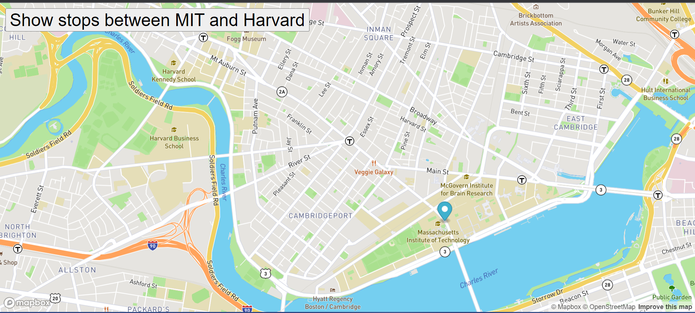
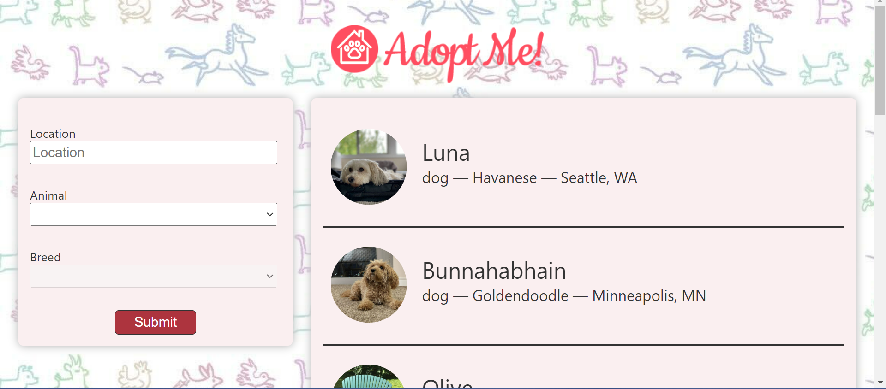
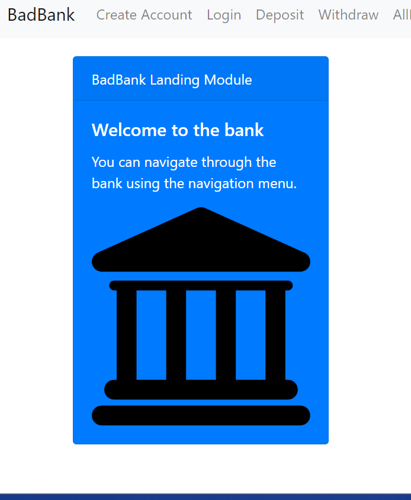

Projects
N Blog

This is NBlog a blog which I created to display the full capabilities of the MERN stack by utilizing MongoDB,Express,Node and React all together to provide users with a dynamic application where users of my blog's community can create, manage and discover posts.
Bus Map tracker
This is my bus map tracker where I use the mapbox api to power the application abiltiy to track all the bus stops between MIT and Harvard. I plan to later on have this tracker show the paths in my own city of Laval instead of the Boston location its currently tracking.
N-adoptme
This is my N-adoptme project where I built the front-end for a pet adoption website designed by Brian Holt. This project displays a list of pets that users can select from and choose to adopt. I plan to later on change the api to the petfinder api so that users can actually adopt pets through my website instead of just imitating the adoption process.
Badbank
This is my badbank project where I have built a front-end banking application. This application allows users to create and login to their account and also allows users to deposit,withdraw and view their own balance. I plan to build a backend for this application so that users who use this app can have their data stored.